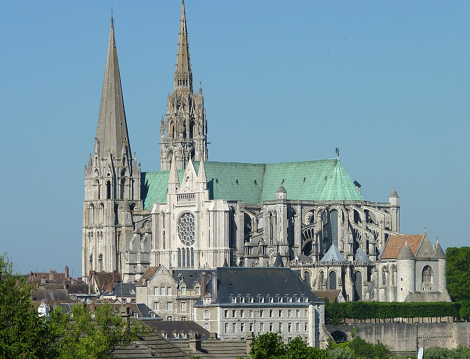
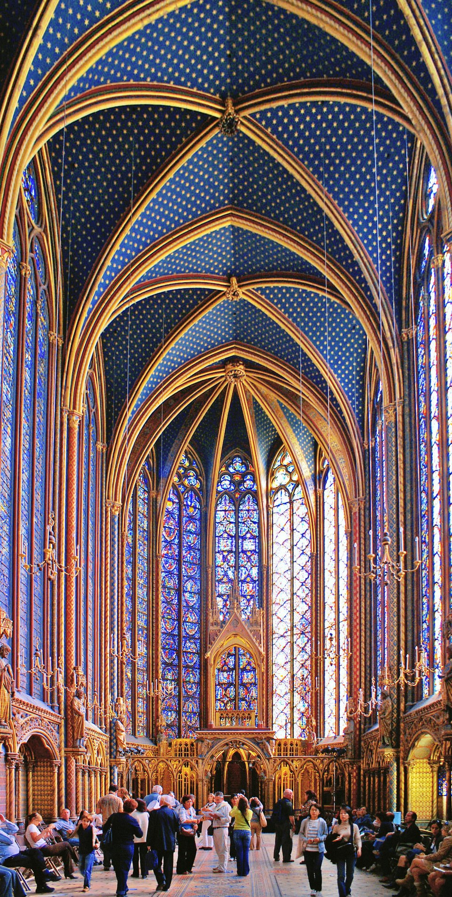
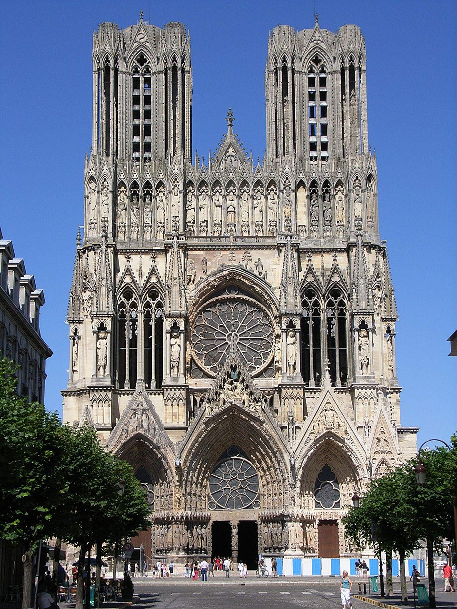
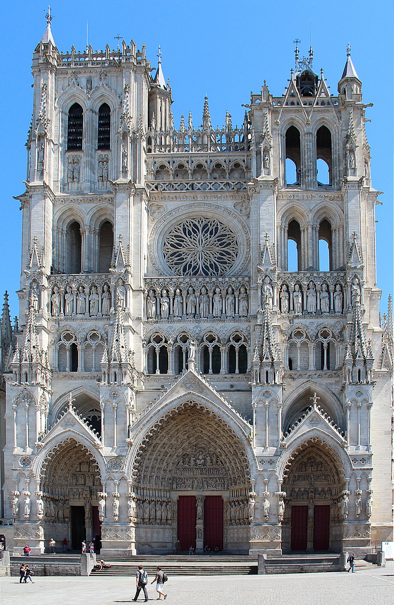
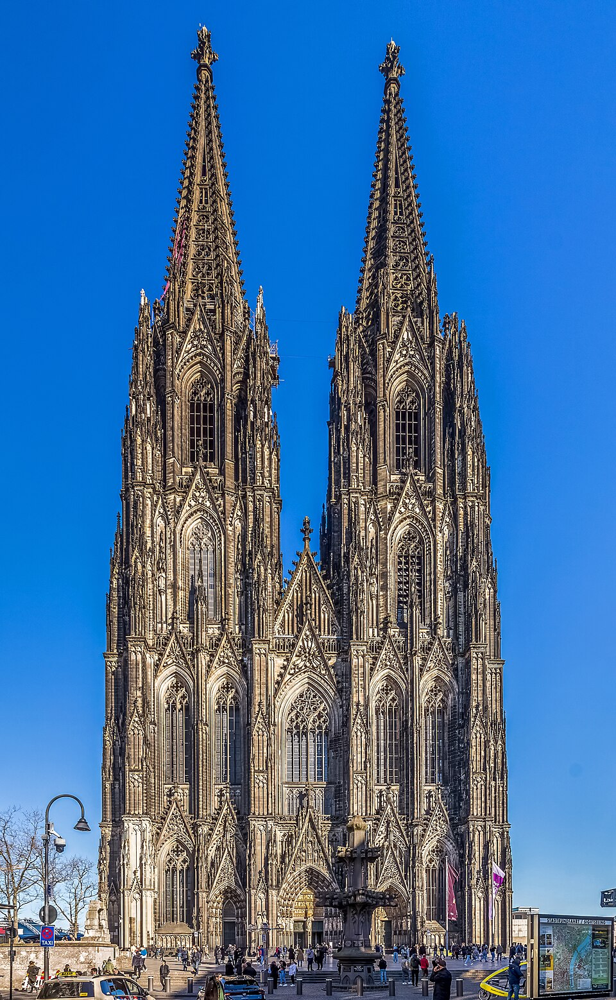
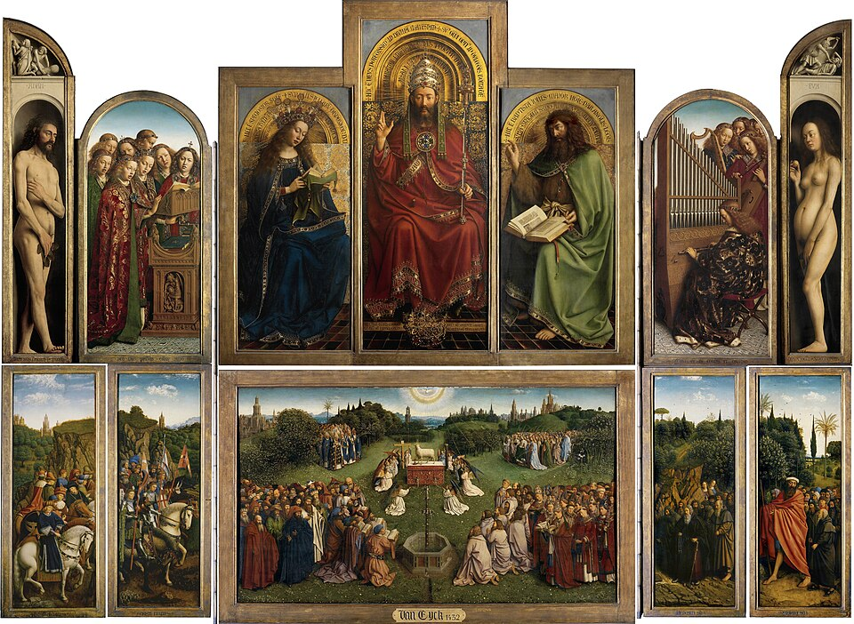
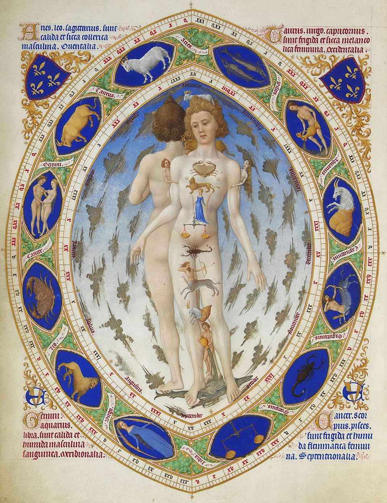
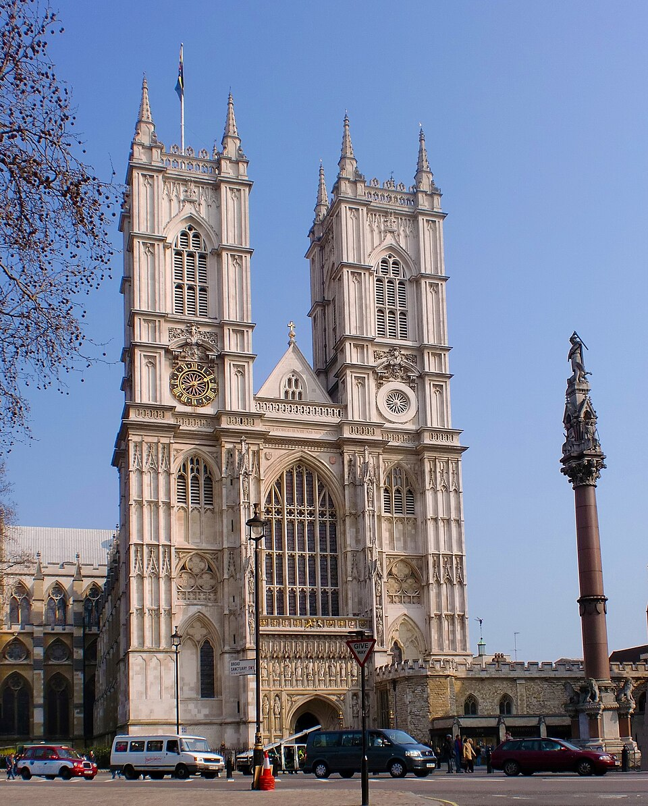
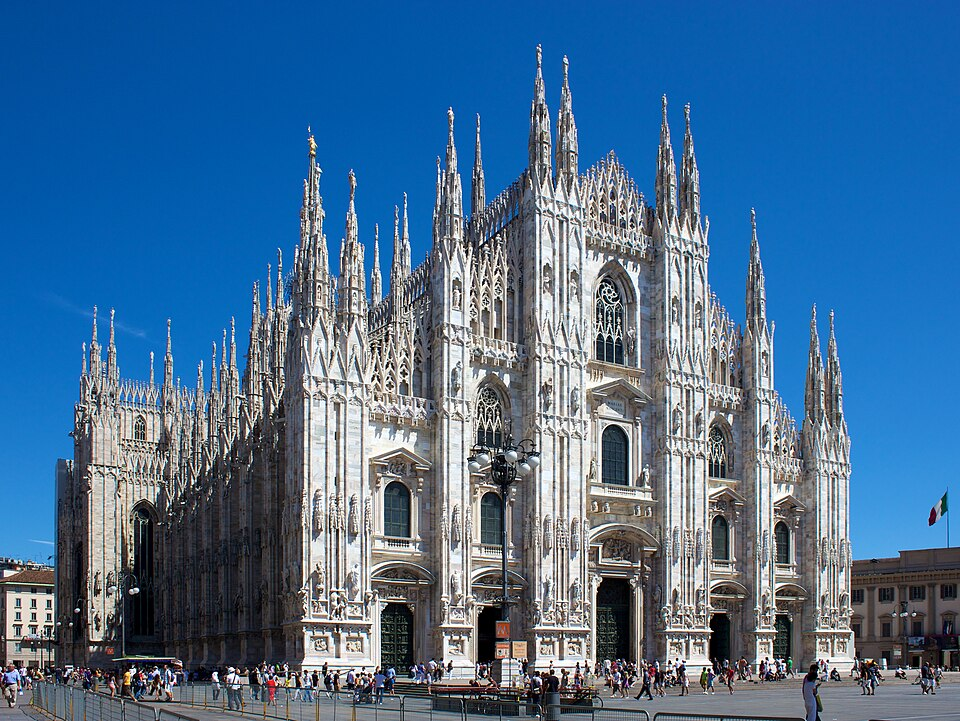

🏆 Meesterwerk: Notre-Dame de Paris
Het icoon van de Gotiek en de kathedraal die een stad bezielt

Parijs, Frankrijk, 1163-1345
📚 TIJDSGEEST CONTEXT (1140-1500)
🌍 POLITIEK PERSPECTIEF
- Koninkrijk Frankrijk: De Gotiek is Frans in oorsprong - een symbool van koninklijke macht
- Stedenautonomie: Guildes en burgers financieren kathedralen
- Honderdjarige Oorlog: Engeland vs. Frankrijk (1337-1453) - politieke chaos, artistieke bloei
- Concilie van Konstanz: Einde van het Grote Schisma (twee pausen)
📖 LITERAIR PERSPECTIEF
- Gotische romans: Victor Hugo's Notre-Dame de Paris
- Dantes Divina Commedia: Reis door hel, vagevuur en hemel
- Chaucers Canterbury Tales: Pelgrims vertellen verhalen
🧠 PSYCHOLOGISCH PERSPECTIEF
- Verlangen naar licht: Optimisme - licht stroomt binnen, de hemel is dichtbij
- Individualisering: Realistische portretten - de mens als individu
- Liefde en romantiek: Hoflijke liefde (amour courtois)
🏛️ HISTORISCH PERSPECTIEF
- Universiteiten: Parijs, Oxford, Bologna - kennis wordt georganiseerd
- Boekdruk (ca. 1450): Gutenberg verandert alles
- Zwarte Dood (1348): De dood wordt alomtegenwoordig
💭 FILOSOFISCH PERSPECTIEF
- Scholastiek: Thomas van Aquino - geloof en reden zijn compatibel
- Nominalisme: Wilhelm van Ockham - universalia bestaan niet
- Humanisme: Terug naar de klassieken
🎨 STIJLFIGUREN & THEMA'S
🏛️ Architectuur
Spitsbogen: Puntige bogen leiden druk naar beneden - hogere gewelven.
🪟 Ramen
Glas-in-lood: Gekleurde ramen vertellen Bijbelverhalen in licht.
🌉 Steunberen
Vliegende steunberen: Waterspuwers en steunberen houden de muren.
📐 Verticaal
Streven naar boven: Spitse torens en zuilen heffen de blik naar de hemel.
🎨 Realisme
Natuurgetrouw: Figuren hebben individuele gezichten, kleding valt natuurlijk.
🌹 Decoratie
Flamboyant: Vlamvormige lijnen en overvloedige versiering.
🎯 Centrale Thema's
- De Maagd Maria: Notre-Dame (Onze Lieve Vrouwe) is overal
- Heiligenverhalen: Legenden van martelaren en wonderen
- Het Laatste Oordeel: Christus als rechter
- Natuur: Planten en dieren als goddelijke schepping
🖼️ TOP 10 MEEST INVLOEDRIJKE WERKEN
1. Notre-Dame de Paris (1163-1345)
Parijs, Frankrijk · Vroege Gotiek
Achtergrond: Gebouwd op de Île de la Cité, het hart van Parijs. Beroemd door Victor Hugo's roman (1831) en de recente brand (2019).
🔍 STIJLANALYSE
Westfaçade: Twee torens, drie portalen met het Laatste Oordeel, de Maagd, en Sint-Anna.
Rozetramen: Drie enorme ronde ramen - de westelijke toont schepping en einde der tijden.
Vliegende steunberen: De beroemde "spinnenpoten" - technisch noodzakelijk, esthetisch iconisch.
Interieur: Dubbele zijbeuken creëren een brede, lichte ruimte.
2. Kathedraal van Chartres (1205-1240)
Chartres, Frankrijk · Hooggotiek

Achtergrond: Grootste ensemble van originele 13e-eeuwse ramen. Beroemd om het "Chartres-blauw".
🔍 STIJLANALYSE
Rozet Noordtransept: 13-meter diameter roos met de Maagd omringd door profeten.
Glas-in-lood: 172 ramen met 5000+ figuren - een visuele Bijbel.
Chartres-blauw: Unieke kobaltblauwe kleur - het geheim is verloren gegaan.
Labyrinth: In de vloer - een pelgrimsroute voor hen die niet naar Santiago kunnen.
3. Sainte-Chapelle (1242-1248)
Parijs, Frankrijk · Koninklijke kapel

Achtergrond: Gebouwd door Lodewijk IX voor de Doornenkroon. Een juweel van licht, geen parochiekerk.
🔍 STIJLANALYSE
Bovenkapel: 15 enorme ramen, 6,5 meter hoog, 1113 scènes uit de Bijbel.
Licht als materie: De muren zijn bijna niet zichtbaar - puur licht en kleur.
Relieven: De kroon van doornen werd hier bewaard achter gouden tralies.
4. Kathedraal van Reims (1211-1275)
Reims, Frankrijk · Kroningskerk

Achtergrond: Hier werden de koningen van Frankrijk gekroond. De façade is een meesterwerk van beeldhouwkunst.
🔍 STIJLANALYSE
Portaalfiguren: De "Reims-smile" - figuren met subtiele glimlach, individuele gezichten.
Engel met glimlach: Beroemdste beeld - een engel die lacht, symbool van hoop.
Koepel torens: Open kroonlijsten - luchtig en elegant.
5. Kathedraal van Amiens (1220-1270)
Amiens, Frankrijk · Klassieke Gotiek

Achtergrond: Grootste Gotische kathedraal van Frankrijk (42 meter hoog). Gebouwd in recordtempo.
🔍 STIJLANALYSE
Westfaçade: Meest harmonieuze van alle Gotische kathedralen - perfecte balans.
Beeldhouwkunst: Meer dan 4000 beelden - het Laatste Oordeel is een meesterwerk.
Labyrinth: In de vloer - spirituele oefening voor pelgrims.
6. Dom van Keulen (1248-1880)
Keulen, Duitsland · Hooggotiek

Achtergrond: Bouw stopte 300 jaar, voltooid in 19e eeuw. Bevat relieken van de Drie Koningen.
🔍 STIJLANALYSE
Torens: 157 meter hoog - grootste kerktorens tot 1880.
Drieluikvensters: Meer glas dan steen.
Driekoningenschrijn: Gouden reliekschrijn met de Wijzen uit het Oosten.
7. Lam Gods Altaarstuk (1432)
Sint-Baafskathedraal, Gent · Jan en Hubert van Eyck

Achtergrond: Meesterwerk van de Vlaamse Primitieven. Meerdere malen gestolen (WO I en WO II).
🔍 STIJLANALYSE
Olieverf innovatie: Perfectioneerden olieverf - ongekende diepte en detail.
Open en dicht: Gesloten: aankondiging; open: Lam Gods en mystiek offer.
Detail: Elk grashalm is geschilderd, de spiegels reflecteren.
8. Très Riches Heures (1412-1416)
Chantilly · Gebroeders van Limburg

Achtergrond: Getijdenboek voor Jean de France, hertog van Berry. Bekendste miniatuurschilderkunst.
🔍 STIJLANALYSE
Kalender: 12 maanden tonen het leven van adel en boeren.
Astronomie: Zon in zijn teken, maanstanden boven elk tafereel.
Internationale Gotiek: Elegant, sierlijk, rijk - stijl van de Europese hoven.
9. Westminster Abbey (1245-1517)
Londen, Engeland · Engelse Gotiek

Achtergrond: Krooningskerk van Engeland sinds 1066. Begraafplaats van monarchen en beroemdheden.
🔍 STIJLANALYSE
Perpendiculaire stijl: Verticale lijnen, fanvaulting - typisch Engels.
Grafmonumenten: Van Elizabeth I tot Isaac Newton - pantheon van Britse geschiedenis.
Stone of Scone: Onder de krooningsstoel - symbool van Schots-Engelse eenheid.
10. Dom van Milaan (1386-1965)
Milaan, Italië · Laatgotiek

Achtergrond: Laatste grote kathedraal van Europa, 500 jaar in aanbouw. Derde grootste kerk ter wereld.
🔍 STIJLANALYSE
Spitsen: 135 spitsen en 3400 beelden - meer is meer.
Marmer: Roze, wit en grijs marmer uit de Alpen.
Madonnina: Gouden Madonna van 4 meter hoog bovenop de koepel.
📚 CONCLUSIE: LICHT EN VERTICALITEIT
De Gotische kunst leert ons:
- Dat steen kan zweven: Vliegende steunberen en spitsbogen
- Dat licht goddelijk is: Gekleurde ramen transformeren zonlicht
- Dat de mens individu is: Realistische portretten
- Dat natuur goddelijk is: Planten en dieren als decoratie
De Gotiek was de hoogste uiting van de middeleeuwse geest - een streven naar hemel op aarde.